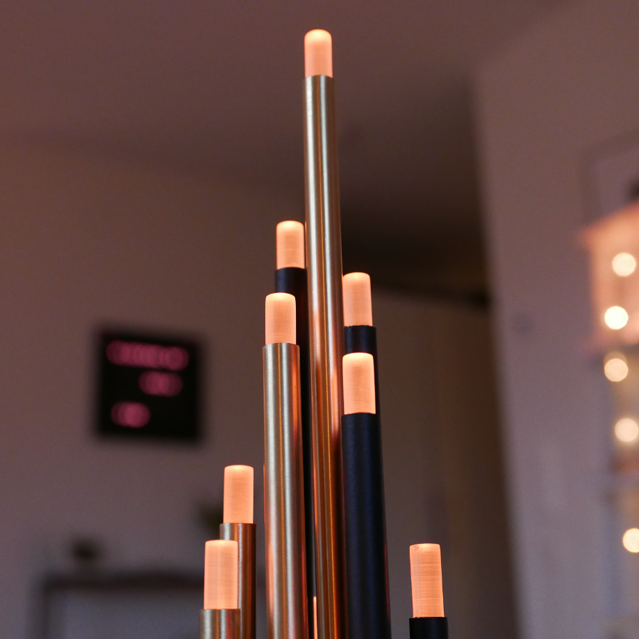
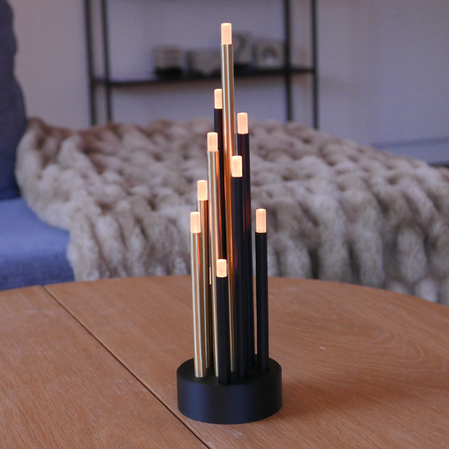
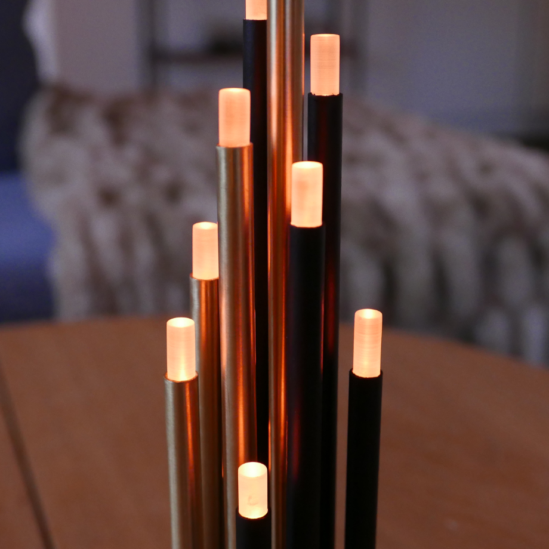
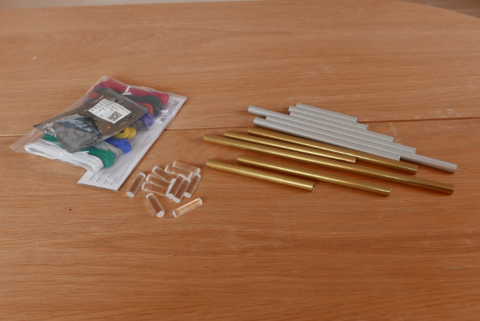
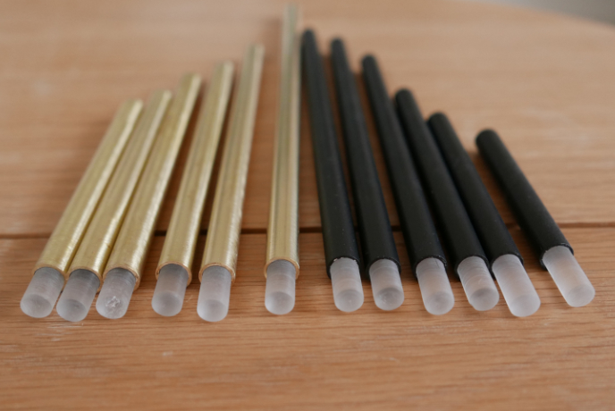
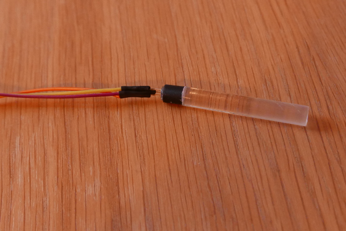
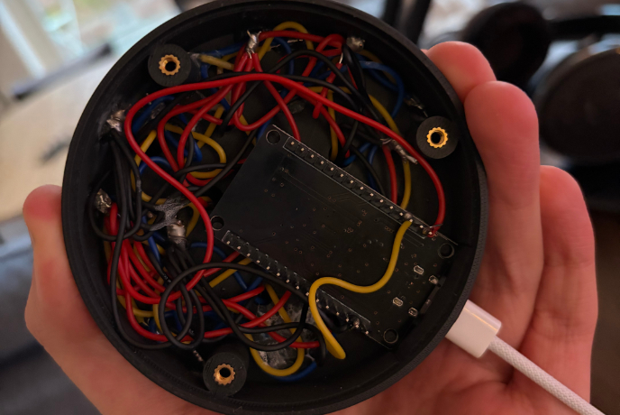

Ville göra något med rör som lyste
Tanken va först att använda glaskulor på toppen men jag kunde inte riktigt hitta de i dom måtten jag ville men sen såg jag dessa akrylrören och gillar verkligen hur detta blev




Jag började med att såga till mässing och aluminiumrören till rätt mått och jag sågade även ner akrylröret till massa småbitar
Hade redan några WS2812 dioder sen tidigare men beställde hem några solida kablar för de är så mycket trevligare att jobba med i sånna här projekt

Jag trodde först jag kunde köpa 10 mm svarta aluminiumrör för jag har tidigare köpt 8mm men de gick tydligen inte alls att få tag i enkelt så jag fick måla de själv
Borde kanske sprayat de men jag pallade faktiskt inte så jag bara rollade de i 2 tunna lager och de blev helt okej
Jag slipade sedan mässingsrören med 1000 grit för att få den ytan jag ville ha
Testade innan med hur jag skulle få akrylen lagom frostad och slutade med att jag slipade de med typ 300 grit
Jag va tvungen att slipa akrylen med typ 60 grit först för att de skulle passa för inga av rören va speciellt exakta och akrylen passade inte riktigt om jag inte slipade ner den en bit

Jag lödde fast 4 kablar på varje led för alla går att kontrollera individuellt så de behövs en in och ut datakabel på varje
Sen limmade jag på en liten 3d printad cylinder och detta limmades sedan på akrylen
Detta limmade jag sen fast inne i varje rör

Jag va inte speciellt snäll mot mig själv som designade den som jag gjorde men jag fick pilla ett tag med att löda fast alla kablar o bottenplattan
Kunde köra alla lamporna i parallell och sen bara seriekoppla alla datapinsen till en ESP32 med WLED så jag kan köra lite ljuseffekter